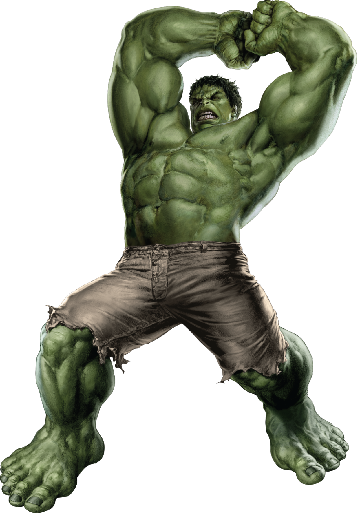

El científico Bruce Banner heredó genéticamente los genes mutados de su padre los cuales (dentro de Bruce), siendo una mezcla perfecta entre la artificialidad y la naturaleza, fueron la parte innata de Hulk. Años después Bruce estaba probando una de sus
últimas invenciones, la bomba gamma. Justo en el momento de la explosión, un joven llamado Rick Jones se adentró en la zona de pruebas del ejército donde iba a ser lanzada la bomba y un atónito Bruce Banner se dio cuenta
y fue a salvarlo. Quedaban ya muy pocos segundos para el impacto de la bomba cuando Bruce Banner le dice que se aparte de la zona, pero Rick no le escucha. Entonces Bruce le tira a una zanja para salvarlo pero cuando se
va a meter él, explota la bomba y la radiación le da de lleno. Esta radiación se queda para siempre en el cuerpo de Bruce Banner.
- Nombre: Bruce Banner
- Alias: La Masa, Masa, Masa verde, Joe Fixit, "El Profesor", el Coloso de Jade, el Coloso Esmeralda, El Destructor de Mundos, el Gigante Esmeralda, Mr. Arréglalo, Mr. Arreglalotodo, Cicatriz Verde
- Especialidad: Fuerza (la cual conlleva , por defecto, velocidad), resistencia, longevidad, regeneración, capacidad de respirar bajo el agua y ver fantasmas y otras entidades astrales. Todas estas habilidades crecen,
habitualmente junto con su tamaño (depende de la transformación), en relación a su furia.
- Estatura: 3 m tranformado
- Peso: 1 t transformado
- Afiliaciones actuales: Ultimates
- Miembros del entorno: Brian Banner (padre, fallecido), Rebeca Banner (madre, fallecida), Jennifer Walters (She-Hulk, prima), Betty Banner Ross (Red She-Hulk, esposa), General Ross, Red-Hulk (suegro), Caiera (esposa
fallecida), Skaar (hijo), Lyra (hija)
- Estatus actual: Activo
Atrás